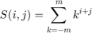

savgol
Savitzky-Golay filter, for data smoothing and derivatives
Contents
Syntax
y=savgol(x, pol_degree, win_size, deriv, rate)
Input Arguments
- x -- Input data (vector or column matrix)
- pol_degree -- Degree of polynomial
- win_size -- Window-size (has to be uneven!)
- deriv -- Order of derivative ("0" for smoothing, "1" for first derivative, etc.). Default is "0"
- rate -- Sample rate [Hz]. Default is "1"
Output Arguments
- y -- Filtered data
Notes
"Cutoff-frequencies":
for smoothing (deriv=0), the frequency where the amplitude is reduced by 10% is approximately given by
f_cutoff = sampling_rate / (1.5 * look)
for the first derivative (deriv=1), the frequency where the amplitude is reduced by 10% is approximately given by
f_cutoff = sampling_rate / (4 * look)
Coefficients:
C(i,k) = i! / delta_sample * SUM(j=0,..,n) { s_inv[i][j] * k^j }with i = 0,.., n (= degree of polinomial fitted)
k = -m,..,m (= number of points taken for the fit)

with i,j = 0,..,n
Literature
- Siegmund Brandt, Datenanalyse, pp 435
- Press et al., Numerical Recipes, 2nd ed, pp 650
- Savitzky and Golay: Analytical Chemistry, Vol.36, No.8, Jul 64, 1627 ff
Examples
smoothed = SAVGOL(x, 3, 7, 0); % smooth data, with a cubic polynomial and a window-size of 7 acc = SAVGOL(pos, 3, 11, 2, 10) % calculate the second derivative of 10-Hz data
See Also
sgolay, sgolayfilt, filter